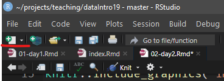
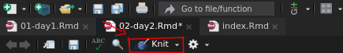
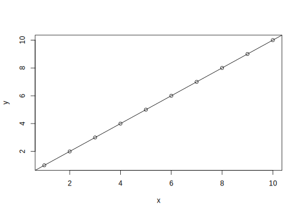
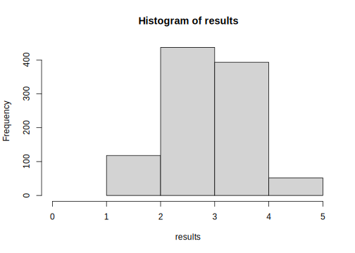
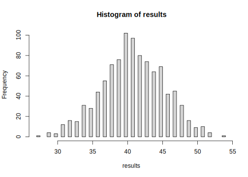

Day 2 Bring on the Data!
2.1 Project-based Workflow
Whenever you work on a new project (like a lab analysis), create a new RStudio Project. You can find the quick menu for this in the top right corner of RStudio.
Projects automatically set your so-called working directory
to this project folder. This is where R will search for
files and save files to. Every file path should be relative
to this working directory. This also enables the RStudio autocompletion
to help you find your files. Inserting a pair of quotations marks (")
into your code and pressing Tab or Ctrl+Space shows you the files
and folders in your working directory.
2.1.1 Workflow of a Data Analysis
A typical workflow according to Hadley Wickam, Chief Scientist at RStudio:

Figure 2.1: Source: Wickham und Grolemund (2017)
2.1.2 Communication!
Your thoughts during data analysis matter (To future-you and others)!
This is one of the main reasons I use Rmarkdown
instead of R scripts for teaching, as well
as regular data analysis. This .Rmd format mixes
text with code chunks. You can create your own
in the top left corner of RStudio. Choose “R markdown” and press OK.

This will present you with an example document showcasing some of the possibilities. A plethora of information can be found in the official Rmarkdown guide (Allaire u. a. 2019).
Text is interpreted as markdown, with special characters to mark text as bold, italics, a heading etc. and text in so called code chunks is interpreted as (R) code. You can insert R code chunks with the shortcut Ctrl+Alt+I or the button in the upper right corner of the code editor window. To execute (= send to the console) a piece of code in a chunk hit the familiar Ctrl+Enter. To Execute
Hitting the knit button will run the whole document and produce a report in the specified format (html, docx, pdf and many others).

2.1.3 Important RStudio-Settings
For the sake of reproducibility, please set these settings (Tools -> Global Options) in your RStudio.


Figure 2.2: RStudio Settings
2.2 Packages: The Tidyverse
This is where a lot of the power of R comes from.
Packages are…
Installing packages
# install tidyverse
install.packages("tidyverse")Load packages:
# load tidyverse
library(tidyverse)## ── Attaching packages ────────## ✓ ggplot2 3.3.2 ✓ purrr 0.3.4
## ✓ tibble 3.0.3 ✓ dplyr 1.0.1
## ✓ tidyr 1.1.1 ✓ stringr 1.4.0
## ✓ readr 1.3.1 ✓ forcats 0.5.0## ── Conflicts ─────────────────
## x dplyr::filter() masks stats::filter()
## x dplyr::lag() masks stats::lag()The tidyverse is
2.3 Exercise from day 1
2.3.1 Questions
- What do we get when we execute
c("12", 13, 14)[2] + 1?- Try do predict what will happen before executing the code.
- Why does it happen that way?
- Make a vector x with the numbers from 1 to 10
- Make a vector y with the same content as x
- Plot both vectors as points (y ~ x)
- hint: use the
plotfunction
- hint: use the
- Do a linear regression and add it as a line to the plot
- How can we find out more about the linear regression object?
2.3.2 Answers
c("12", 13, 14)[2] + 1
vec <- c("12", 13, 14)
vec[2]
vec[2] + 1Ctrl+Shift+Enter to run the whole chunk
x <- 1:10
y <- x
# plot(x, y)
plot(y ~ x)
linearModel <- lm(y ~ x)
abline(linearModel)
2.4 Reading data
The readr-package is part of the tidyverse,
which we already loaded above with library(tidyverse).
Take your favourite table calculation program (Excel, Libre Office). We create a list of course participants and at the same time note the row in which they are sitting and their hair length.
We can save the file as .csv (Comma Separated Values),
which is a plain text file and can be opened
with any text editor. As a destination we
create a folder in our project called data,
to keep everything organized.
read_csv("data/students.csv")You might have a German Excel version…
Because the German language uses
the comma as a decimal separator, it can’t use
the comma to separate entries in a table as well.
This is why the German version of a “csv” produced
by Excel is actually semicolon (;) separated.
But there is an easy fix for that:
read_csv2("data/students.csv")Both read_csv... functions are just special
cased of read_delim, where any character can
be specified to separate entries, not just commata
or semicolons:
# read_csv equals
read_delim("data/students.csv", delim = ",")
# read_csv2 equals
read_delim("data/students.csv", delim = ";")If you are not sure what function to use, open the file in a regular text editor like notepad and have a look.
You can also read straight from excel files.
readxl::read_excel("data/students.xlsx")Up until now we only looked at the results of calling the read-functions but we didn’t assign the data to a variable so that we can use it. Let us do so now:
students <- read_csv("data/students.csv")## Parsed with column specification:
## cols(
## name = col_character(),
## row = col_double(),
## hairlength = col_character()
## )You can view your data in a new tab in RStudio.
View(students)Or simply look at the content of our variable students:
students## # A tibble: 10 x 3
## name row hairlength
## <chr> <dbl> <chr>
## 1 jannik 0 s
## 2 ulrich 1 s
## 3 lea 1 l
## 4 melanie 1 l
## 5 judith 1 l
## 6 maria 1 l
## 7 alex 2 s
## 8 christina 2 l
## 9 jan 2 s
## 10 pamina 2 lWriting data works analogous to that.
write_csv(students, path = "data/students2.csv")Now what do we do with the data?
2.5 The Pipe and dplyr Verbs
The dplyr package and the pipe (%>%)
2.5.1 The Pipe
Data needs to be processed. Functions that process data are used sequentially. The common way (in other languages) to write this looks about like this:
First we define some toy functions.
addOne <- function(x) x + 1
standardize <- function(x) x / max(x)
callOutResult <- function(x) paste("Your result is", x)Then we use them with our example data, which is just the numbers from 1 to 5.
data <- 1:5
newData <- addOne(data)
evenNewerData <- standardize(newData)
callOutResult(evenNewerData)## [1] "Your result is 0.333333333333333" "Your result is 0.5"
## [3] "Your result is 0.666666666666667" "Your result is 0.833333333333333"
## [5] "Your result is 1"This is not fun to write! We might want to overwrite our original data instead of creating a new variable for every step.
data <- 1:5
data <- addOne(data)
data <- standardize(data)
callOutResult(data)## [1] "Your result is 0.333333333333333" "Your result is 0.5"
## [3] "Your result is 0.666666666666667" "Your result is 0.833333333333333"
## [5] "Your result is 1"This is a lot of repetition!
Who wants to type data that often?
Maybe we turn to math notation with brackets?
data <- 1:5
callOutResult(standardize(addOne(data)))## [1] "Your result is 0.333333333333333" "Your result is 0.5"
## [3] "Your result is 0.666666666666667" "Your result is 0.833333333333333"
## [5] "Your result is 1"This is certainly not pretty. Enter: The pipe %>%.
Insert a pipe with Ctrl+Shift+M (Or manually type it out)
The pipe enables us to pass the result of one function
on to the next function.
With pure functions g and f, the following
semi-mathematical equation holds true:
f(g(x)) = x %>% g() %>% f()
data <- 1:5
data %>% addOne() %>% standardize() %>% callOutResult()## [1] "Your result is 0.333333333333333" "Your result is 0.5"
## [3] "Your result is 0.666666666666667" "Your result is 0.833333333333333"
## [5] "Your result is 1"We can also write each step on a new line (because R doesn’t care about new lines).
data %>%
addOne() %>%
standardize() %>%
callOutResult()## [1] "Your result is 0.333333333333333" "Your result is 0.5"
## [3] "Your result is 0.666666666666667" "Your result is 0.833333333333333"
## [5] "Your result is 1"For functions with more than one argument, the pipe inserts the stuff from the left hand side (LHS) as the first argument to the function!
addNumber <- function(x, number) x + numberdata %>% addNumber(3)## [1] 4 5 6 7 82.5.2 Overview of the dplyr Verbs
These are the main functions we use to
transform and process our data after
we brought it into R with the readr package.
These functions work on data.frames, or
the slightly more modern version of the data.frame
that the tidyverse calls a tibble (like table).
These functions are:
selectfilterarrangemutatesummarisecount- And additionally the adverb:
group_by
2.5.3 select
Select columns of a data.frame (or tibble).
Remember the “base-R” way to select columns?
students[, c("name", "row")]The select function replaces this:
select(students, name, row)
# or in a pipe
students %>% select(name, row)2.5.4 filter
Filter a tibble based on conditions applied to columns.
Remember the old way to subset?
students[students$row == 1, ]The new syntax is more straightforward:
students %>%
filter(row == 1)And can be combined in pipes:
students %>%
filter(row == 1) %>%
select(name)This new expression gives the same result as the base-R way
of writing students[students$row == 1, 1] but is easier to read.
The conditions in filter stack.
students %>%
filter(row == 2, hairlength == "l")## # A tibble: 2 x 3
## name row hairlength
## <chr> <dbl> <chr>
## 1 christina 2 l
## 2 pamina 2 lWe can also combine conditions with or ( | )
students %>%
filter(row == 2 | hairlength == "l")## # A tibble: 8 x 3
## name row hairlength
## <chr> <dbl> <chr>
## 1 lea 1 l
## 2 melanie 1 l
## 3 judith 1 l
## 4 maria 1 l
## 5 alex 2 s
## 6 christina 2 l
## 7 jan 2 s
## 8 pamina 2 lOne thing to note: As of now, we have not changed the students data! because we only looked at the output of the functions in the console and did not assign anything (with <- ).
2.5.5 mutate
To Change a column or add a new one e.g. the length of your names. Last week in base R, adding a column worked like that:
students$nameLength <- str_length(students$name)But with the mutate function, it gets more
readable. Note, that we do not refer to
students$name explicitly inside of mutate.
mutate knows that name is referring to a column of
the tibble passed into the function from the left.
Furthermore, there is an equal sign (=) in there,
because everything inside of mutate is a parameter
to the function, it is not an assignment (<-).
students %>%
mutate(nameLength = str_length(name))We might need this modified/enhanced data later,
so let’s overwrite the variable students:
students <- students %>%
mutate(nameLength = str_length(name))head(students)## # A tibble: 6 x 4
## name row hairlength nameLength
## <chr> <dbl> <chr> <int>
## 1 jannik 0 s 6
## 2 ulrich 1 s 6
## 3 lea 1 l 3
## 4 melanie 1 l 7
## 5 judith 1 l 6
## 6 maria 1 l 52.5.6 arrange
Who has the longest name?
students %>%
arrange(desc(nameLength)) %>%
head()## # A tibble: 6 x 4
## name row hairlength nameLength
## <chr> <dbl> <chr> <int>
## 1 christina 2 l 9
## 2 melanie 1 l 7
## 3 jannik 0 s 6
## 4 ulrich 1 s 6
## 5 judith 1 l 6
## 6 pamina 2 l 6This could have been achieved with filter as well:
students %>%
filter(nameLength == max(nameLength))## # A tibble: 1 x 4
## name row hairlength nameLength
## <chr> <dbl> <chr> <int>
## 1 christina 2 l 9Note that the dplyr functions always return tibbles,
not the raw vectors. But we can pull out a tibble
column as a vector:
students %>%
filter(nameLength == max(nameLength)) %>%
pull(name)## [1] "christina"2.5.7 count
How many are in the first row?
students %>% count(row)## # A tibble: 3 x 2
## row n
## <dbl> <int>
## 1 0 1
## 2 1 5
## 3 2 4How many based on hairlength?
students %>% count(row, hairlength)## # A tibble: 5 x 3
## row hairlength n
## <dbl> <chr> <int>
## 1 0 s 1
## 2 1 l 4
## 3 1 s 1
## 4 2 l 2
## 5 2 s 22.5.8 summarise
What is the mean name-length?
In base-R, we would have operated on the column of
the tibble extracted as a vector with he $-operator.
mean(students$nameLength)## [1] 5.5But in the tidyverse, we can work directly with the tibble.
students %>%
summarise(nameLength = mean(nameLength))## # A tibble: 1 x 1
## nameLength
## <dbl>
## 1 5.52.5.9 group_by und summarise
Do participants in the first row have longer names?
group_by is an adverb because by itself, it doesn’t
do anything to the data, but it changes the way the
other dplyr verbs operate. Any function that
summarizes a vector, like mean, sum, max,
now operates on the groups.
students %>%
group_by(row) %>%
summarise(nameLengh = mean(nameLength))## `summarise()` ungrouping output (override with `.groups` argument)## # A tibble: 3 x 2
## row nameLengh
## <dbl> <dbl>
## 1 0 6
## 2 1 5.4
## 3 2 5.5students %>%
group_by(row, hairlength) %>%
summarise(nameLength = mean(nameLength)) %>%
arrange(desc(nameLength))## `summarise()` regrouping output by 'row' (override with `.groups` argument)## # A tibble: 5 x 3
## row hairlength nameLength
## <dbl> <chr> <dbl>
## 1 2 l 7.5
## 2 0 s 6
## 3 1 s 6
## 4 1 l 5.25
## 5 2 s 3.5Do people with long hair tend to sit in the first row?
students %>%
filter(row != 0) %>%
count(row, hairlength)## # A tibble: 4 x 3
## row hairlength n
## <dbl> <chr> <int>
## 1 1 l 4
## 2 1 s 1
## 3 2 l 2
## 4 2 s 22.5.9.1 Sidenotes
pull pulls out a column of a tibble as a vector.
students %>%
pull(name)## [1] "jannik" "ulrich" "lea" "melanie" "judith" "maria"
## [7] "alex" "christina" "jan" "pamina"2.5.10 Moving on to Probability
The question we might ask now is:
If every person were randomly seated, What would be the probability to find that many people (or more) with long hair in the first row?
2.6 But what is Probability?
There are two concepts of probability (\(P\)):
- Probability inside your head: strength of belief; may vary among people
- Probability „out there“: long-term frequency of an event; can be empirically measured or predicted from a model (motulsky2017?).
We will be concerned with the latter.
2.6.1 Example:
Categorical / discrete data: Drawing (blindly) from a hat.
students %>%
count(row, hairlength)## # A tibble: 5 x 3
## row hairlength n
## <dbl> <chr> <int>
## 1 0 s 1
## 2 1 l 4
## 3 1 s 1
## 4 2 l 2
## 5 2 s 2students %>%
filter(row != 0) %>%
count(hairlength)## # A tibble: 2 x 2
## hairlength n
## <chr> <int>
## 1 l 6
## 2 s 3Note
This example uses a lot of base-R functions and less tidyverse style. Try to dicern between the use of normal vectors like in the following code and tibbles as observed in the tidyverse.
We create a “hat” of hairlengths with the numbers observed in our course.
hat <- c( rep("l", 6), rep("s", 3) ) # rep stands for repeat
hat## [1] "l" "l" "l" "l" "l" "l" "s" "s" "s"And sample / draw blindly from said hat
sample(hat, 1)## [1] "s"Now we sample the same number of hairlenghts from the hat as the number of people sitting in the first row:
firstRow <- sample(hat, 5)This is representative of people coming into the room and getting seated randomly.
Note that the default for sample is
replace = FALSE(see?sample), so the same person can only be seated once. It does not return to the hat to be drawn again.
How many in this sample have long hair?
sum(firstRow == "l")## [1] 4What fraction?
# this works because `mean` converts TRUE to 1 and FALSE to 0
mean(firstRow == "l") ## [1] 0.8We can simulate this draw a bunch of times,
as if people were coming into the room over and over
again, each time getting seated randomly. For this,
we use a for loop. This loop executes the
code between the curly braces once for every
element of the vector 1:5. The current element
of every iteration is called i in this case.
for (i in 1:5) {
print(i)
}## [1] 1
## [1] 2
## [1] 3
## [1] 4
## [1] 5We use this concept to simulate drawing 1000 times, each time calculating the number of people with long hair in the first row.
N <- 1000
# create vector for the sum from each draw
results <- 1:N
# assign the results in a loop
for (i in 1:N) {
draw <- sample(hat, 5)
results[i] <- sum(draw == "l")
}The histogram shows us, how often each number appears in our results.
hist(results, breaks = 0:5)
How surprised should we be, that in our real world data, we found this number of long haired people in the first row? Well, let us check how often we got that many or more in our simulated data.
# -> Calculate probability for random event
# sum greater than or equal to observed frequency / length
mean(results >= 4)## [1] 0.445So in 44.5 % of cases in our simulation, we got 4 or more people with long hair in the first row. This means, that the observed result is quite likely to occur just by chance. We can not prove that it did indeed resulted just from chance alone, but we can show that if it is just random chance, we are not very surprised to see a result like this in our data.
2.6.2 P-Values
P-Values were introduced in the 1920s by Ronald Fisher:
“The P value is defined as the probability, under the assumption of no effect or no difference (the null hypothesis), of obtaining a result equal to or more extreme than what was actually observed.” \(-\) (Original: Statistical Methods for Research Workers) (fisher1990?)
By convention: p ≤ 0.05 is called “significant”. In other words, a p-Value is…
“… a measure of how surprised you should be if there is no actual difference […], but you got data suggesting there is” \(-\) Alex Reinhart (reinhart2015?)
We can calculate the exact p-value of our example with the hypergeometric distribution.
# note that it calculates cumulative probabilities!
# default: P(X <= x)
1 - phyper(q = 3, m = 6, n = 3, k = 5)## [1] 0.4047619It is quite close to our simulation! And had we used a higher N,
like 1’000’000, it would of course be even closer.
The hypergeometric distribution for for our example looks as follows
barplot(dhyper(x = 0:5, m = 6, n = 3, k = 5), names.arg = 0:5)Figure 2.3: Hypergeometric distribution for people with long hair in the first row with random seating.
2.7 Exercise: Transfer to new Data
Starwars, a dataset that comes with the tidyverse.
?starwars- In a new Rmarkdown document:
- Preview the dataset
- Select the columns name, height, mass, gender
- Who is the heaviest?
- Convert height from cm to m
- Which gender is taller on average in starwars?
- Hint: use
group_byandsummarise - You will need the argument
na.rm = TRUEinmean()
- Hint: use
- Simulate drawing 81 characters (or rather genders) from a hat.
- Repeat this 1000 times (with a for-loop).
- How often do you obtain 62 or more male characters?
- How surprised should we be about the data?
- Calculate an exact p-value for the observed frequency
- note: use pbinom instead of phyper to sample WITH replacement
- Knit the document into a report
2.7.1 Solutions
Live on Friday
2.7.1.1 First, we load packages and Data
library(tidyverse)starwars %>% select(name, mass, height, gender) %>% head()## # A tibble: 6 x 4
## name mass height gender
## <chr> <dbl> <int> <chr>
## 1 Luke Skywalker 77 172 masculine
## 2 C-3PO 75 167 masculine
## 3 R2-D2 32 96 masculine
## 4 Darth Vader 136 202 masculine
## 5 Leia Organa 49 150 feminine
## 6 Owen Lars 120 178 masculineSidenote: to put a column in the front:
starwars %>% select(gender, everything() ) %>% head()## # A tibble: 6 x 14
## gender name height mass hair_color skin_color eye_color birth_year sex
## <chr> <chr> <int> <dbl> <chr> <chr> <chr> <dbl> <chr>
## 1 mascu… Luke… 172 77 blond fair blue 19 male
## 2 mascu… C-3PO 167 75 <NA> gold yellow 112 none
## 3 mascu… R2-D2 96 32 <NA> white, bl… red 33 none
## 4 mascu… Dart… 202 136 none white yellow 41.9 male
## 5 femin… Leia… 150 49 brown light brown 19 fema…
## 6 mascu… Owen… 178 120 brown, gr… light blue 52 male
## # … with 5 more variables: homeworld <chr>, species <chr>, films <list>,
## # vehicles <list>, starships <list>Height is not in SI units! But we love SI units! So we convert height from cm to meter.
starwars <- starwars %>%
mutate(height = height / 100)View(starwars)starwars %>%
arrange(desc(mass)) %>%
head()## # A tibble: 6 x 14
## name height mass hair_color skin_color eye_color birth_year sex gender
## <chr> <dbl> <dbl> <chr> <chr> <chr> <dbl> <chr> <chr>
## 1 Jabb… 1.75 1358 <NA> green-tan… orange 600 herm… mascu…
## 2 Grie… 2.16 159 none brown, wh… green, y… NA male mascu…
## 3 IG-88 2 140 none metal red 15 none mascu…
## 4 Dart… 2.02 136 none white yellow 41.9 male mascu…
## 5 Tarf… 2.34 136 brown brown blue NA male mascu…
## 6 Owen… 1.78 120 brown, gr… light blue 52 male mascu…
## # … with 5 more variables: homeworld <chr>, species <chr>, films <list>,
## # vehicles <list>, starships <list>starwars %>%
filter(mass == max(mass, na.rm = TRUE)) %>%
head()## # A tibble: 1 x 14
## name height mass hair_color skin_color eye_color birth_year sex gender
## <chr> <dbl> <dbl> <chr> <chr> <chr> <dbl> <chr> <chr>
## 1 Jabb… 1.75 1358 <NA> green-tan… orange 600 herm… mascu…
## # … with 5 more variables: homeworld <chr>, species <chr>, films <list>,
## # vehicles <list>, starships <list>starwars %>%
filter(mass == max(mass, na.rm = TRUE)) %>%
pull(name)## [1] "Jabba Desilijic Tiure"- Who is the heaviest?
- Convert height from cm to m
- Which gender is taller on average in starwars?
- Hint: use
group_byandsummarise - You will need the argument
na.rm = TRUEinmean()
- Hint: use
starwars %>%
group_by(gender) %>%
summarise(height = mean(height, na.rm = TRUE),
N = n()) %>%
head()## `summarise()` ungrouping output (override with `.groups` argument)## # A tibble: 3 x 3
## gender height N
## <chr> <dbl> <int>
## 1 feminine 1.65 17
## 2 masculine 1.77 66
## 3 <NA> 1.81 4- Simulate drawing 81 characters (or rather genders) from a hat.
- Repeat this 1000 times (with a for-loop).
- How often do you obtain 62 or more male characters?
- How surprised should we be about the data?
- Calculate an exact p-value for the observed frequency
- note: use
pbinominstead ofphyperto sample WITH replacement
- note: use
- Knit the document into a report
hat <- c("male", "others")
sample(hat, 84, replace = TRUE, prob = c(0.49, 0.51))## [1] "male" "male" "male" "others" "male" "others" "others" "male"
## [9] "others" "male" "others" "male" "others" "others" "others" "male"
## [17] "others" "male" "male" "male" "others" "others" "others" "others"
## [25] "others" "male" "male" "others" "others" "male" "others" "others"
## [33] "others" "male" "others" "male" "male" "male" "others" "others"
## [41] "others" "male" "others" "male" "male" "male" "others" "male"
## [49] "male" "others" "others" "male" "others" "male" "male" "male"
## [57] "others" "others" "male" "male" "others" "others" "others" "others"
## [65] "male" "male" "male" "others" "others" "male" "male" "others"
## [73] "male" "male" "male" "others" "male" "male" "male" "male"
## [81] "male" "male" "male" "male"hat <- c("male", "others")
results <- 1:1000
for (i in 1:1000) {
draw <- sample(hat, 84, replace = TRUE, prob = c(0.49, 0.51))
results[i] <- sum(draw == "male")
}
hist(results, breaks = 40)
sum(results >= 62)## [1] 0mean(results >= 62)## [1] 0pbinom(q = 62 - 1, size = 84, prob = 0.49, lower.tail = FALSE)## [1] 3.176077e-06